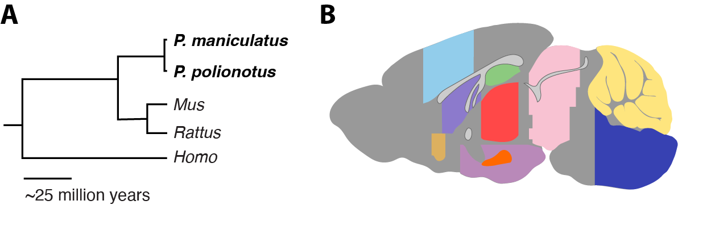
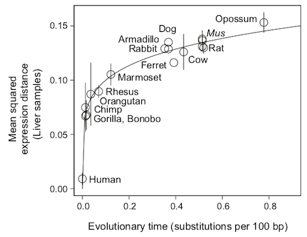
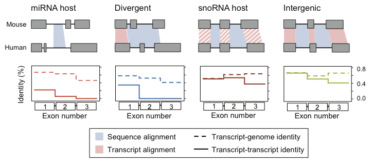

PhD in Bioinformatics and Integrative Genomics, Division of Health Sciences and Technology, MIT 2011-2018
Thesis: Evolutionary signatures for unearthing functional elements in the human transcriptome
Faculty advisor: Aviv Regev
Hi, I'm Jenny Chen. I am interested in understanding how genes encode for social behavioral traits. I take advantage of deer mice of the genus Peromyscus where monogamy has independently evolved multiple times to investigate the molecular mechanisms underlying mating and parental care behaviors. I use techniques spanning classical linkage studies, animal ethology, comparative genomics, and single-cell transcriptomics.
I am currently a MOSAIC K99/R00 scholar and formerly a Harvard Data Science Fellow. My work is a collaboration between the Hoekstra Lab and the Eddy Lab. Prior to this, I received my PhD from MIT where I was advised by Aviv Regev. My publications are listed on my Google Scholar profile and my codebase is available through github.

The evolution of innate behaviors is in part due to genetic variation acting in the nervous system. Gene regulation may be particularly important because it can evolve in a modular brain-region specific fashion through the concerted action of cis- and trans-regulatory changes. To investigate transcriptional variation and its regulatory basis across the brain, we perform RNA-seq on ten different brain subregions in two sister species of deer mice (Peromyscus maniculatus and P. polionotus) - which differ in a range of innate behaviors, including their social system - and their F1 hybrids. We find that interspecific differential expression is pervasive but varies considerably across brain regions. Through analysis of F1 hybrids, we find that much of this modularity is due to cis-regulatory divergence. Together, these results highlight the modularity of gene expression differences and divergence in the brain, which may be key to explain how the evolution of brain gene expression can contribute to the astonishing diversity of animal behaviors.
Paper: Evolution of gene expression across brain regions in behaviorally divergent deer mice. bioRxiv, Sept 2023.

The evolutionary history of a gene is frequently used to predict its function and medical relevance. However, current comparative genomics methods focus primarily on sequence conservation, and few methods exist for interpreting comparative expression data. Using RNA-sequencing data from 7 tissues across 17 mammalian species, I showed that expression evolution across mammals follows a mathematical model called the Ornstein-Uhlenbeck (OU) process. I demonstrate how to use this model to identify expression pathways underlying conserved and lineage-specific phenotypes. Furthermore, I show how to use this model to estimate the distribution of each gene's evolutionarily optimal expression level in a given tissue. This distribution can then be used to detect deleterious expression levels (i.e. levels outside the optimal expression distribution) in patient expression data. This work provides a statistical framework for interpreting expression data across species and in disease.
Paper: A quantitative model for characterizing the evolutionary history of mammalian gene
expression. Genome Research, Jan 2019.

The development of RNA-sequencing technology led to the discovery that thousands, of long noncoding RNAs (lncRNAs) are pervasively transcribed in the mammalian genome. Yet, the function of these genes are unknown. In a collaboration with Manuel Garber (UMass Medical), we developed a computational tool, slncky, that identifies lncRNAs from RNA-sequencing data and examines the evolutionary history of these genes. Our tool discovers orthologous lncRNAs and calculates metrics relevant for noncoding transcript evolution such as transcript-transcript identity (what percentage of the transcript sequence is transcribed in another species) and splice site conservation. Our analysis revealed distinct patterns of selection, uncovering several classes of lncRNAs that likely each have distinct functions. Out of the tens and thousands of currently annotated lncRNAs, we identify 233 constrained lncRNAs which are browsable through the slncky Evolution Browser.
Paper: Evolutionary analysis across mammals reveals distinct classes of long non-coding RNAs.
Genome Biology, January 2016.
Thesis: Evolutionary signatures for unearthing functional elements in the human transcriptome
Faculty advisor: Aviv Regev
Thesis: Analysis of Transcription Factor ChIP-Seq Datasets
Faculty advisor: Gill Bejerano
jennifer underscore chen at fas dot harvard dot edu
Rm 1008, 16 Divinity Avenue
Cambridge, MA